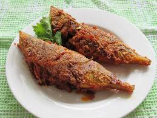

we suggest you to try FISH
To begin making the Mangalore Fish Curry recipe, Smear the cleaned fish with salt and turmeric and keep it aside. Soak tamarind in warm water and keep aside. In a heavy bottomed pan, heat oil and sauté the onions and chillies till the onions are golden brown. ... Add the curry leaves and turn off the heat, serve hot.
